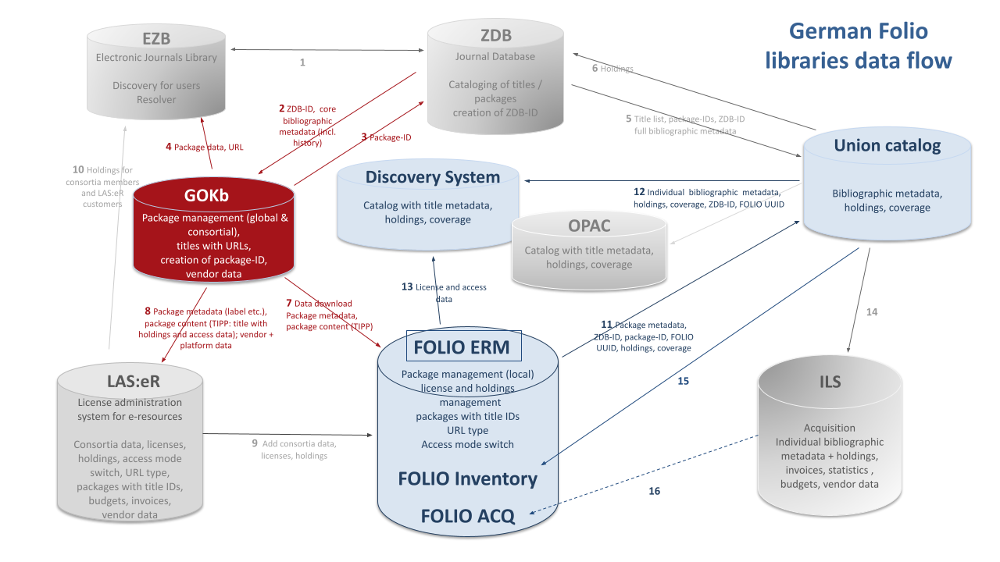

News
GOKb & Folio: data flow
October 6, 2021
In Germany the GOKb has central role for the management of electronic resource packages. It provides data to national union catalogues like EZB & ZDB, but also to local library systems like Folio:

Enhanced Import Client
May 25, 2020
The enhanced version of the GOKb import client YGOR is now online at https://gokb.org/ygor. With this version, a detailed view of each imported record is shown including feedback on erroneous or problematic data values and the possibility to correct those manually directly in the GUI. A saving and loading functionality allows stopping and continuing the upload process at any time. A manual selection of the content type of the package (serial or monograph) is no longer necessary, as this information will be interpreted from the corresponding KBART fields, so an upload of mixed packages is now possible. A documentation on how to import and enrich KBART data via the YGOR client can be found in the GOkb wiki: https://openlibraryenvironment.atlassian.net/wiki/spaces/GOKB/overview.
User interface study & pilot phase
April 15, 2019
In 2018 a study for a new user interface for GOKb was funded by the Bundesministerium für Bildung und Forschung (Federal Ministry of Education and Research). Results were published in April 2019 and will be implemented within the next year.
Independently of this development, GOKb began a data ingest pilot phase incorporating 19 German libraries and consortia. The pilot participants will ingest KBART packages into GOKb and maintain them there. They will share their experiences and discuss with the editorial staff at regular conference calls. The pilot phase is open for all institutions. Please request a GOKb account https://gokbt.gbv.de/gokb/register, and send an email to info@gokb.org for further information.
New import client ‘YGOR’
January 21, 2019
The North Rhine-Westphalian Library Service Centre (hbz) developed a new GOKb import client: YGOR. YGOR is a multilingual web client which supports the upload of KBART files to GOKb. With its help journal titles are automatically compared to the title data of the German Union Catalogue of Serials (ZDB) and enriched with the ZDB-ID, an identifier that is utilized by all participating information systems in Germany and Austria, thereby disambiguating the journal titles. The client no longer relies on OpenRefine but rather uses the cross referencing API of GOKb. The prototype is hosted at https://gokbt.gbv.de/ygor/. A GOKb user account for the ingest of data is required.
GOKb Forum
May 5, 2018
GOKb, formerly run by North Carolina State University, has reorganised as a new coalition of partners. GOKb was formed under the Kuali Foundation as a sister project of Kuali OLE.GOKb is now a community of the Open Library Foundation (OLF), along with OLE and FOLIO, among others. At the GOKb Forum event we will introduce new members of the project team and their respective backgrounds. We will also inform in detail about the current activities of the GOKb project team (matching of data against bibliographic databases, new user interface study, participation in FOLIO ERM Sub Group).
GOKb Planning Meeting 2017
July 1, 2017
The international GOKb partner institutions met in Berlin to discuss the future orientation and organisation of GOKb. The North Rhine-Westphalian Library Service Centre (hbz), the Head Office of the GBV (VZG), and the German Union Catalogue of Serials (ZDB) joined the GOKb steering committee and formally took over the responsibilities of hosting and further developing GOKb.
Invitation to Establish the Open Library Foundation Global Open Knowledgebase
June 1, 2017
The Open Library Foundation (OLF) invited the Global Open Knowledgebase (GOKb) to join its community as a project. For this purpose the GOKb steering committee will establish a Community Charter that describes the mission, organisation, and activities of the GOKb community.